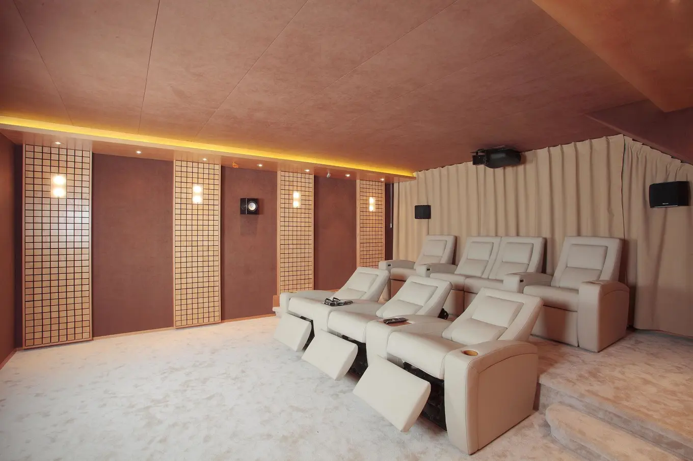

Специализированная мебель для мультимедийных конференц-залов

Переговорный стол или стол президиума, стулья, трибуна – вот, по сути, и все, что нужно для комплектации зала заседаний. Однако даже в таком простом вопросе есть свои нюансы. Как правило, выбор мебели – это одна из финальных стадий работы над проектом, но вот с ее параметрами нужно определиться заранее. При выборе мебели нужно понимать, сколько человек будут размещаться в зале. Если это переговорная комната, то стол для переговоров должен вмещать всех потенциальных участников, причем так, чтобы они не испытывали дискомфорта. Едва ли обсуждение будет успешными, если участники будут вынуждены толкаться локтями. Оптимально обеспечить каждого человека пространством по крайней мере в один метр.
Специализированная мебель в кабинете руководителя
Мебель в кабинете руководителя по определению должна быть не только удобной, но и представительной. Требования к организации рабочего места в кабинете остаются по существу прежними, но следует учесть и необходимость проведения совещаний в кабинете директора, а также различных деловых встреч. В этом случае места вдоль Т-образного стола должно быть достаточно для комфортного размещения всех приглашенных. Отдельные кабинеты часто оснащают телекоммуникационным оборудованием, а также компьютерной, аудио-, видео- и иной техникой. Действительно: проведение видеоконференций и связь с подчиненными через коммутатор являются необходимыми атрибутами кабинета руководителя.
Мебель для домашнего кинотеатра

От оснащения домашнего кинотеатра мебелью напрямую зависит удовольствие, получаемое от просмотра шедевров киноискусства. На первом месте стоят, конечно, кресла или диваны, ведь в них Вам предстоит провести практически без движения два, а то и три часа. Чтобы за это время ничего не затекло, а от кинопросмотра остались только позитивные впечатления, к выбору мягкой мебели стоит отнестись со всей серьезностью.
Где заказать мебель?
На рынке существует множество компаний, осуществляющих поставку и изготовление офисной и бизнес мебели. Однако если Ваша компания планирует оснащение зала заседаний под ключ, то проще заказать поставку мебели для зала тому системному интегратору, который занимается этим проектом. Это позволит учесть все описанные выше нюансы и, тем самым, добиться идеально сбалансированного стиля и функциональности Ваших помещений.